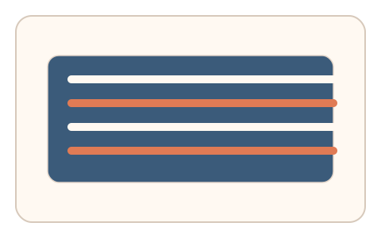
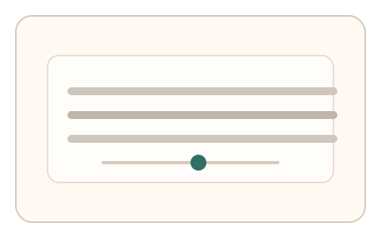

#46
视觉思考范式：时域/适应/残影
已扩展
对比适应中性点
高对比适应后调节灰阶条纹中性点，以偏移方向与稳定时间验证对比适应特征。
概念原文
先暴露高对比纹理，再出现灰阶条纹，用户调整“感觉中性”的对比度；记录偏移方向与稳定时间。
利用对比适应的主观回弹特性作为验证信号。
研究背景
对比适应会改变对后续灰阶刺激的感知，使中性点发生偏移。通过测量中性点的偏移方向与稳定时间，可获得主观适应的行为特征。
核心机制
- 先暴露高对比纹理进行适应。
- 切换灰阶条纹并提供对比度滑杆。
- 用户调节到“感觉中性”的对比度。
- 记录偏移方向、幅度与稳定时间。
用户流程
- 步骤 1：用户观看高对比纹理。
- 步骤 2：出现灰阶条纹并开始调节。
- 步骤 3：系统记录中性点并判定。
判定信号
中性点偏移方向与幅度
对比适应导致可预测的偏移趋势。
稳定时间与微调次数
真实校准通常伴随短暂收敛过程。
判定逻辑
检查中性点偏移是否落在人类区间，并结合稳定时间与微调曲线；一次到位或无偏移判异常。
对抗面
- 脚本固定对比度直接提交
- 重放真实用户调节序列
防御与缓解
- 随机化纹理方向与对比度强度
- 加入亮度噪声与轻微相位扰动
- 叠加微时序与鼠标轨迹信号进行多信号判定
可达性与风险
提供低对比或替代任务，避免对对比敏感用户造成不适。
- 显示设备对比度设置差异影响中性点
- 环境光线影响对比感知
可视化状态

状态 1：高对比适应
高对比纹理短时适应。

状态 2：中性点调节
用户调节灰阶条纹对比度。

状态 3：适应判定
分析偏移方向与稳定时间。
参考资料
Contrast adaptation
说明对比适应与中性点偏移。
Contrast sensitivity
说明对比感知与阈值特性。